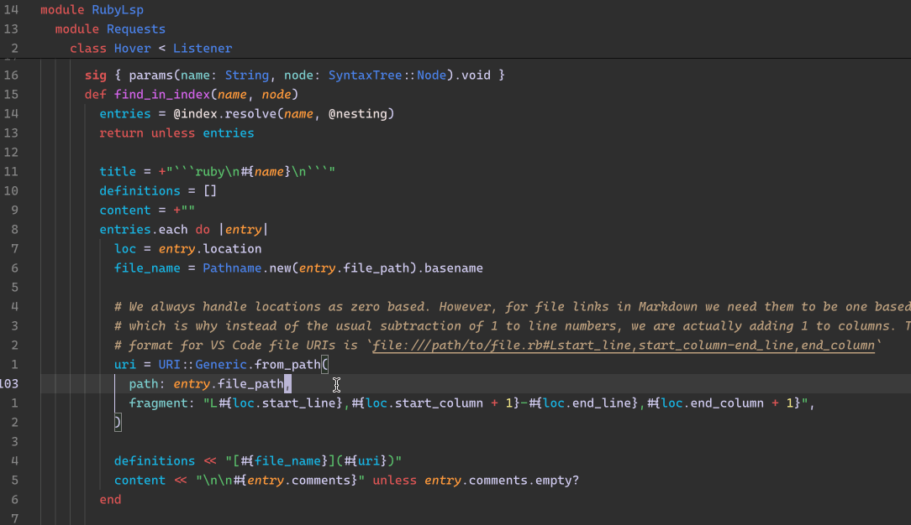

class RubyLsp::Requests::Hover

The hover request displays the documentation for the symbol currently under the cursor.
Example¶ ↑
String # -> Hovering over the class reference will show all declaration locations and the documentation
Constants
- ALLOWED_TARGETS
- ResponseType
Attributes
_response[R]
Public Class Methods
new(index, nesting, emitter, message_queue)
click to toggle source
Calls superclass method
RubyLsp::ExtensibleListener::new
# File lib/ruby_lsp/requests/hover.rb, line 43 def initialize(index, nesting, emitter, message_queue) @nesting = nesting @index = index @_response = T.let(nil, ResponseType) super(emitter, message_queue) emitter.register(self, :on_constant_read, :on_constant_write, :on_constant_path) end
Public Instance Methods
initialize_external_listener(extension)
click to toggle source
# File lib/ruby_lsp/requests/hover.rb, line 53 def initialize_external_listener(extension) extension.create_hover_listener(@nesting, @index, @emitter, @message_queue) end
merge_response!(other)
click to toggle source
# File lib/ruby_lsp/requests/hover.rb, line 59 def merge_response!(other) other_response = other.response return self unless other_response if @_response.nil? @_response = other.response else @_response.contents.value << "\n\n" << other_response.contents.value end self end
on_constant_path(node)
click to toggle source
# File lib/ruby_lsp/requests/hover.rb, line 87 def on_constant_path(node) return if DependencyDetector::HAS_TYPECHECKER generate_hover(node.slice, node.location) end
on_constant_read(node)
click to toggle source
# File lib/ruby_lsp/requests/hover.rb, line 73 def on_constant_read(node) return if DependencyDetector::HAS_TYPECHECKER generate_hover(node.slice, node.location) end
on_constant_write(node)
click to toggle source
# File lib/ruby_lsp/requests/hover.rb, line 80 def on_constant_write(node) return if DependencyDetector::HAS_TYPECHECKER generate_hover(node.name.to_s, node.name_loc) end